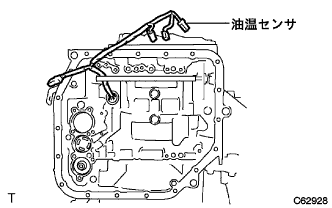
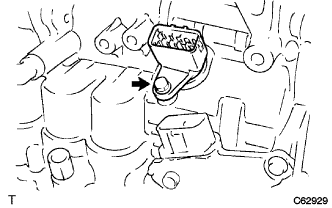
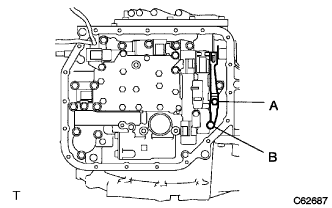
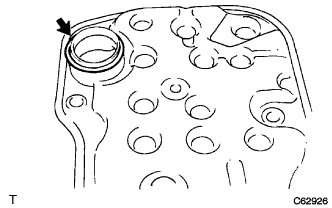
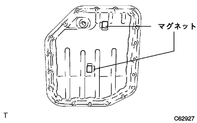

トランスミッション ワイヤ（U340E） 取り付け |
| 1. トランスミッション ワイヤ取り付け |
|  |
トランスミッションワイヤ(油温センサ付き)のOリング部にオートフルードタイプT-IVを塗布する。
トランスミッションワイヤ(油温センサ付き)をオートマチックトランスアクスルに通す。
|  |
ボルトで、トランスミッションワイヤ(油温センサ付き)を固定する。
| 2. トランスミッション バルブ ボデーASSY取り付け |
 |
ボルト13本を均等に締め付け、トランスミッションバルブボデーASSYをオートマチックトランスアクスルに取り付ける。
| ボルト | 長さ(ｍｍ) |
|---|---|
| A | 32 |
| B | 22 |
| C | 55 |
| D | 45 |
|  |
ボルト2本でマニュアルディテントスプリングのローラ部中央にマニュアルバルブレバーを合わせて、マニュアルディテントスプリング及びカバーを締め付ける。
| ボルト | 長さ(ｍｍ) |
|---|---|
| A | 14 |
| B | 45 |
各ソレノイドコネクターを取り付ける。
 |
ボルトおよびロックプレートで油温センサを取り付ける。
| 3. バルブボデー オイルストレーナASSY取り付け |
|  |
新品のOリングにオートフルードタイプT-IVを塗布し、オイルストレーナに取り付ける。
 |
ボルト3本でオイルストレーナを取り付ける。
| 4. オートマチックトランスアクスルオイル パンSUB-ASSY(ATM)取り付け |
|  |
オイルクリーナマグネット2個を、図の位置に取り付ける。
 |
ボルト19本でオイルパンを取り付ける。
| 5. オートマチック トランスアクスルASSY取り付け |
参照)| 6. TaSCAN-AT学習値イニシャライズ |
SST(TａSCAN)を使用して、画面表示に従って操作を行い、メインメニューの[作業サポート]を選択し、作業サポート区分の[トランスミッション]を選択する。
画面表示の[AT学習値初期化]を選択し、AT学習値の初期化を行う。